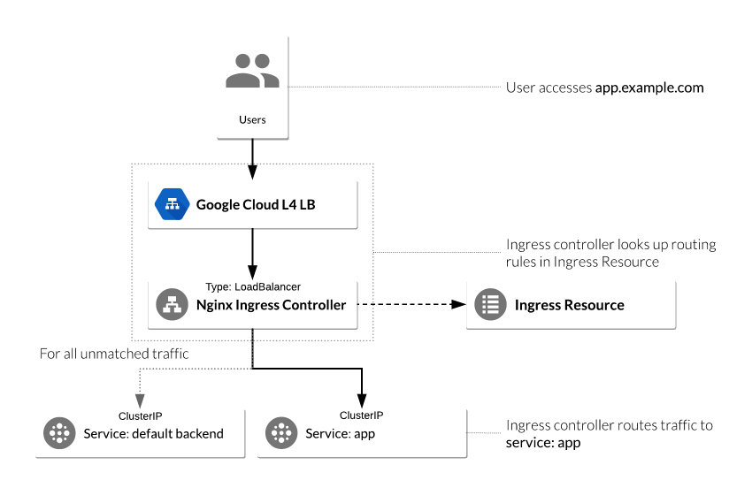

Схема, объясняющая, зачем нужен контроллер Ingress:

1. Установить Helm Tiller в кластер Kubernetes.
2. Установить NGINX Ingress Controller:
С включенным RBAC (по умолчанию в Google Kubernetes Engine):
helm install --name nginx-ingress stable/nginx-ingress --set rbac.create=true
C выключенным RBAC (role-based access control):
helm install --name nginx-ingress stable/nginx-ingress
3. Проверить установку:
kubectl get service nginx-ingress-controller
4. Подождать пару минут.
5. Создать ресурсы Ingress -- правила для направления трафика.